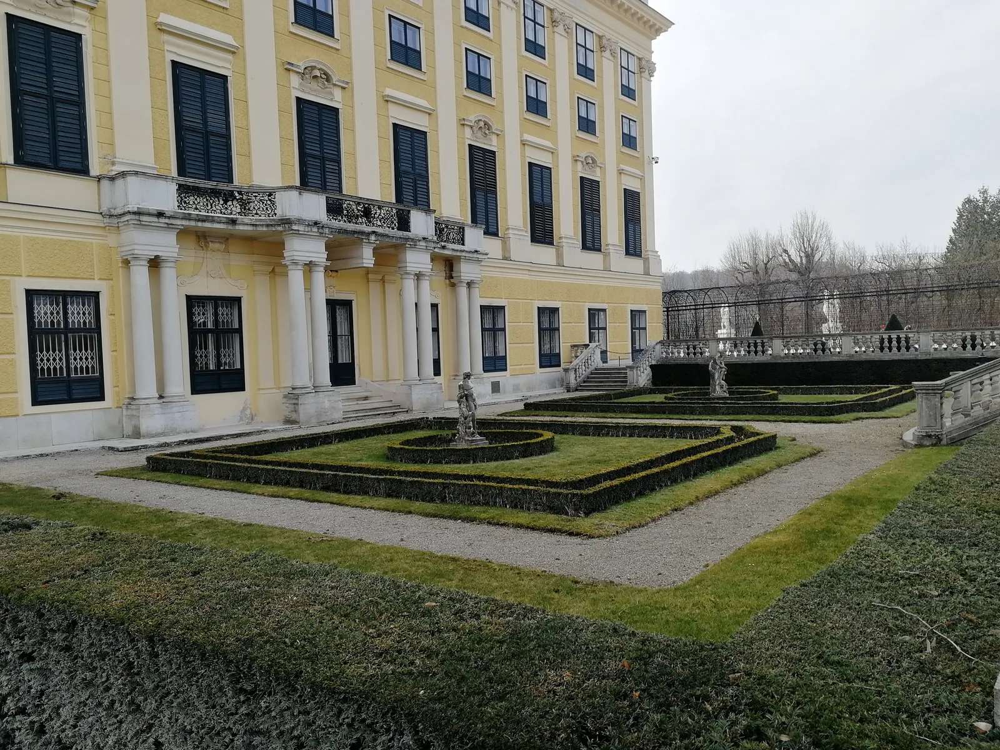
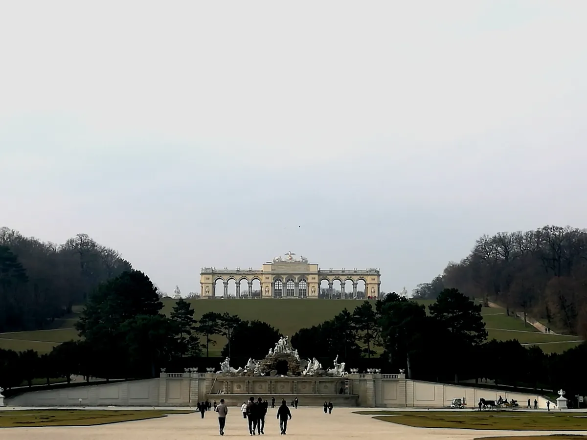
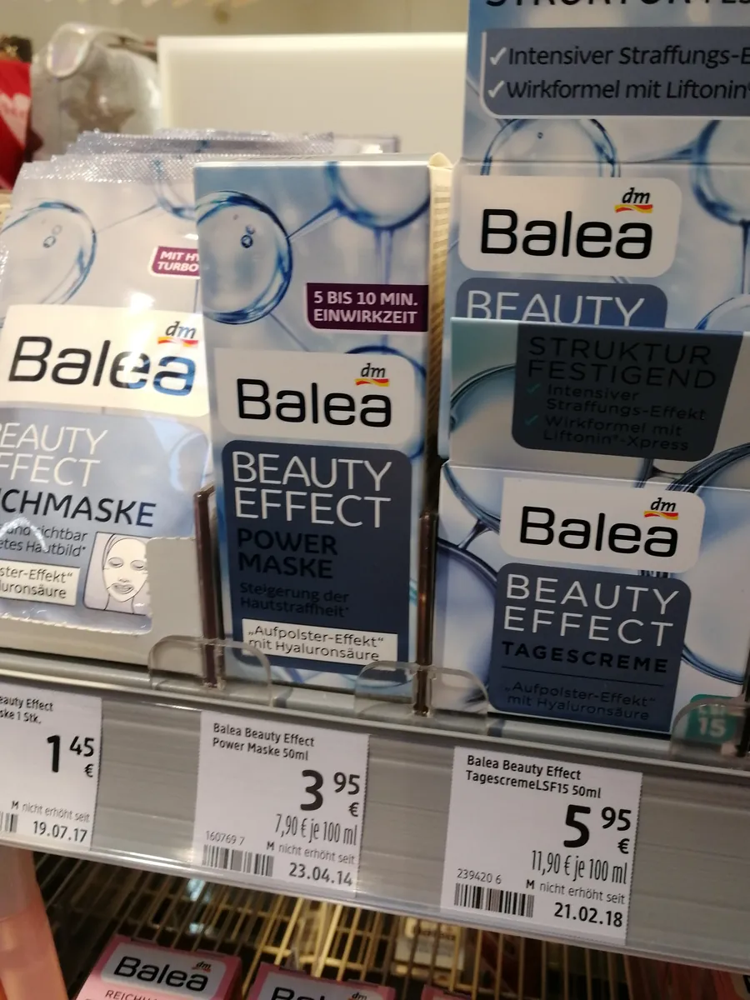
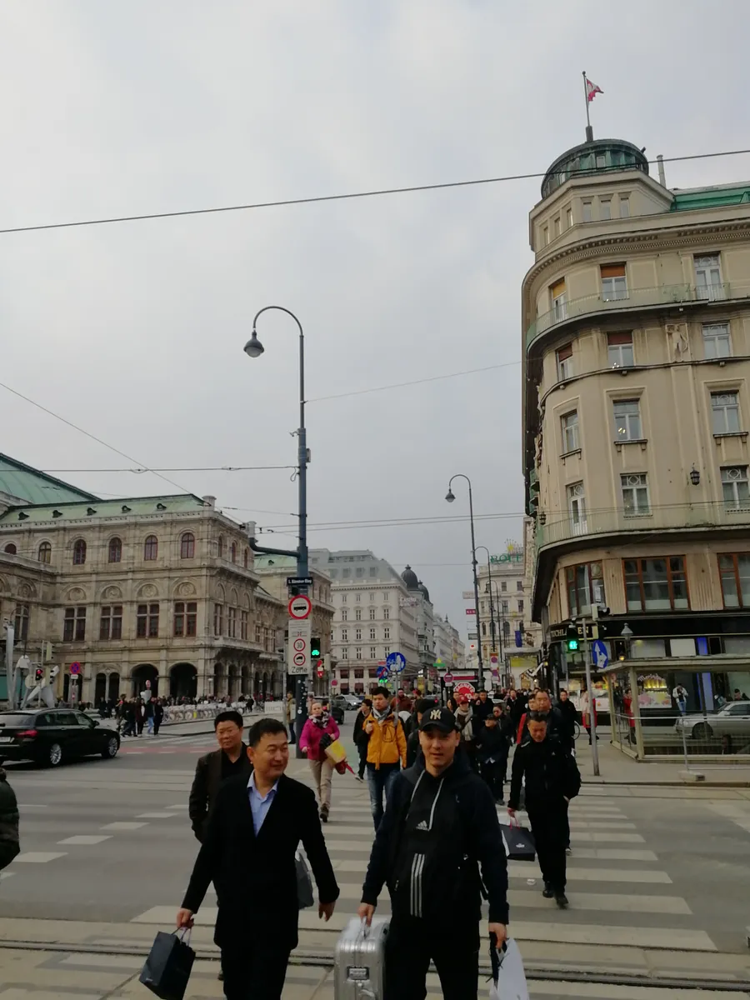
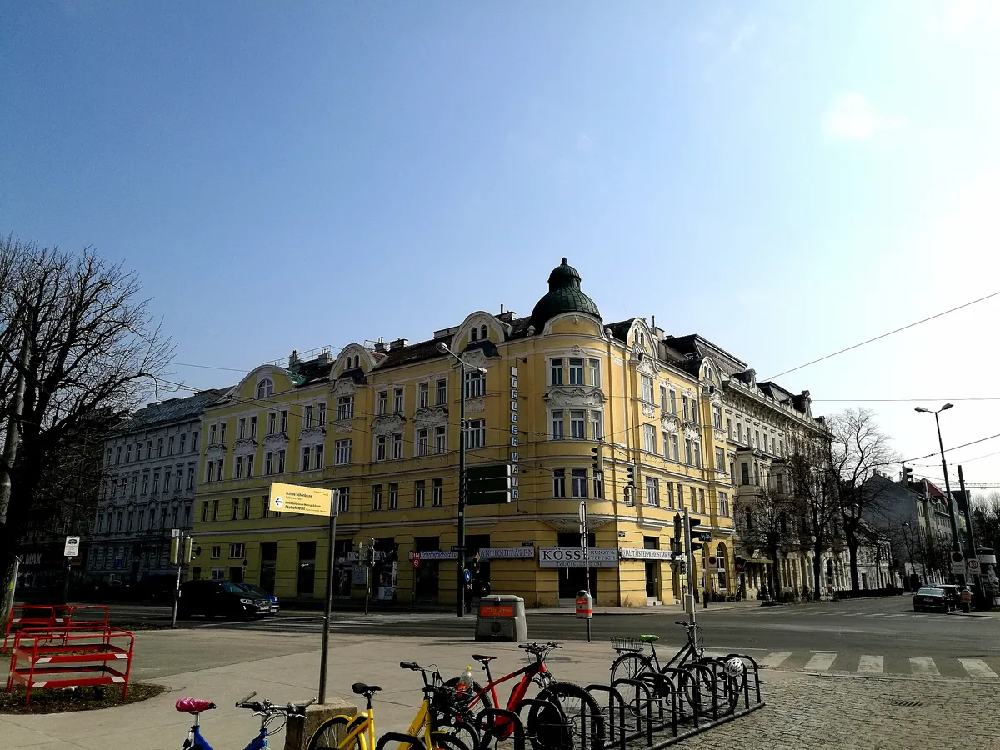

维也纳：一座靠音乐和购物两种方式"走出去"的城市
Vienna — a city that went global through music and shopping.

（2017 年 · 奥地利 · 维也纳）
金色大厅：一场音乐会，把「维也纳」三个字送到了全世界
你说金色大厅是「把文化走出去了」，这个判断挺准的。金色大厅本身其实只是维也纳音乐之友协会大楼里六个演奏厅之一，1863 年由奥皇弗兰茨·约瑟夫一世（茜茜公主的丈夫）批地建成，论建筑等级它和楼里的勃拉姆斯厅、玻璃厅、石厅并没有高下之分，真正让它红遍全球的，是从 1939 年开始、每年 1 月 1 日在这里举行的维也纳新年音乐会——由维也纳爱乐乐团演出，如今固定向全世界 90 多个国家转播。这场音乐会某种意义上是全球历史最悠久、覆盖面最广的「文化直播」之一。
对中国观众来说，金色大厅的分量还有一层特殊的历史原因：1987 年中央电视台首次转播维也纳新年音乐会，从此「金色大厅」这个名字和「高水准音乐」绑定在了中国观众的集体记忆里。这也是为什么后来「到金色大厅演出」一度成为国内不少文艺团体的一个重要标签——一座音乐厅，靠着几十年如一日地做好一件事（办好一场新年音乐会、坚持全球转播），硬是把自己变成了一个国家级的文化符号，这比任何刻意的品牌营销都更有说服力。


购物街区：一条街，挤满了全世界的奢侈品牌
维也纳市中心有一片被称为「金色 U 字」的购物区，由克恩腾大街（Kärntner Straße）、壕沟大街（Graben）和煤市大街（Kohlmarkt）三条步行街拼成一个 U 字形，是维也纳最核心的商业地段。这条街的历史其实很久——克恩腾大街在维也纳还是古罗马定居点（Vindobona）的时候就已经存在，1257 年的官方文件里就有记载，当年是连接维也纳城和通往威尼斯、里雅斯特等港口城市的重要商路。今天这条历史几百年的商路上，站满了路易威登、香奈儿、爱马仕、古驰、蒂芙尼这些全球顶级奢侈品牌的旗舰店，煤市大街过去曾是专供哈布斯堡皇室的御用商铺聚集地，如今变成了国际大牌的展示窗口。


霍夫堡皇宫：哈布斯堡家族统治了 600 多年的「冬宫」
霍夫堡皇宫从 1279 年开始就是奥地利公爵的驻地，此后 600 多年里，历任统治者不断扩建重建，最终形成了今天这座由 18 个翼、19 个庭院、2500 个房间组成的巨型宫殿群，是世界上最大的皇宫建筑群之一。这里是哈布斯堡王朝统治奥地利帝国、后来的奥匈帝国时期的冬宫（夏宫是美泉宫），哈布斯堡家族的统治一直延续到第一次世界大战结束、奥匈帝国解体为止。今天的霍夫堡宫是奥地利联邦总统的官邸所在地——从欧洲最古老的皇室驻地，变成了现代共和国的总统府，这种延续性在欧洲王室建筑里也不算多见。
美泉宫：从狩猎行宫到「小凡尔赛」
美泉宫的故事更有意思。这片地产最早在 1569 年被奥皇马克西米利安二世买下，只是用来饲养供皇室狩猎的动物和家禽，连「美泉」这个名字也是后来一位皇帝在打猎时发现一股清泉、脱口称赞而得名的。真正让美泉宫脱胎换骨的，是女大公玛丽亚·特蕾西娅——她 1740 年继位后，把这座原本的狩猎行宫改建扩建成了可以容纳上千人居住的奢华皇家寝宫，总面积 2.6 万平方米，仅次于法国凡尔赛宫，内部大量采用了在奥地利极其罕见的洛可可风格装饰。从一片打猎用的荒地，到「仅次于凡尔赛宫」的皇家寝宫，美泉宫这段变身史，某种程度上也是哈布斯堡王朝从地方公国崛起为欧洲顶级王室的一个缩影。
写在最后
这一站没有具体的企业考察，更多是站在一座城市的历史和文化肌理里感受它。但金色大厅和「金色 U 字」购物街这两个点放在一起看，其实很有意思——一个靠一场音乐会的持续输出把「维也纳」变成了全球性的文化符号，一个靠几百年的商路历史把自己变成了全球奢侈品牌争相入驻的地段。两条路径不一样，但内核是相通的：真正的「全球化」，从来不是靠一时的声势，而是靠某种东西被反复验证、反复重复了足够长的时间。
真正的全球化，从来不是靠一时的声势，是靠某种东西被反复验证、反复重复了足够长的时间。
——董立鑫 海鑫汇创始人兼执行总裁，新加坡世贸秘书长兼首席运营官
本文整理自董立鑫（Bruce Dong）海外产业考察记录，首发于海鑫汇。